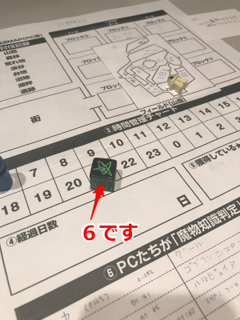
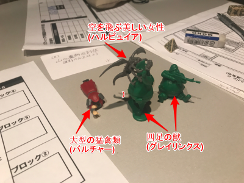
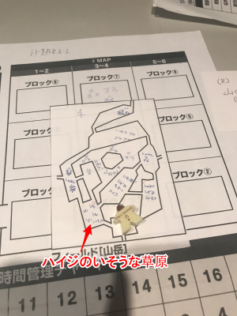
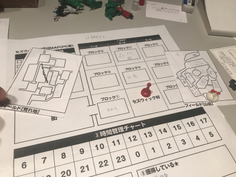

何度かの予定変更を経て今！やっと奴らがセズウィック村に帰ってきた！
我らが歌って踊れるリーダー、ブルーローズ！
パーティーの盾にしてボケ担当、ナナシ！
みんなのアイドルもふもふタビット、ピーター！
溢れるMPで魔法はお任せ、タッシュ！
そしてこのレポを書いている私の担当、狙い撃て、みぞれ！
以上のメンバーでお送りします！
というわけで第4回エターナル会、もといSW2.0キャンペーンでございます！
前回、冒険者の店を経営してもらうため、ドワーフのシドを無事お迎えしましたので、村には店が建設されます。
協議の結果、店の名前は悠久の薔薇亭になりました。
ブルーローズがなんか長い名前を言っておりましたが、それにならなくて本当によかったです(ダイスロールによる決定)(みぞれとその中の人による感想)
そして施設についての説明が入ります。
我々の村にレベルは1です。
現状建てられるものは、武器庫、野菜園、温泉、あとなんだっけ酒場？
こちらも協議の結果、武器庫になりました。理由は討伐が楽になりそうだからです。
メタ的にはそれがいいとは思ったんですが、個人的な感情としては温泉が欲しかったです。温泉街にしたいw
現時点で選べるクエストは3つ。
山岳の魔物討伐、森の魔物討伐、そして月の雫の捜索です。
討伐は本当に討伐するだけなので、これは1回の集まりで3クエスト全部やれたりするのでは？という話に。
月の雫探索が推奨レベル3、討伐が推奨レベル2ということで、肩慣らしに討伐へ行くことになりました。
GM「買い物してもらっていいですが、買い物には制限があります」
タ「え？そんなんだったっけ？(当該キャンペーン経験者)」
GM「それはケイトを選んだ時の話。ケイトは商人とのコネがあるから買い物に制限はない」
み「じゃシドのメリットは？」
GM「お金を払うと周辺エリアの情報をくれる」
これに対して、がめつい、と批評を受けるシドであった。かわいそう。
仕方がないので各自適宜買えるものを買い、村のすぐそばの山岳エリアへ移動することに。
この討伐クエストのクリア条件ですが
(1)合計16レベル分の敵を倒すこと。但し(2)を除く
(2)特定の敵を倒すこと(ちょっと強い)
となっております。そして討伐クエストに限り
(a)(2)の敵が探索エリアに出現する
(b)普段イベント判定1D6の5、6で敵が発生するところ、サイコロの目が+1される
となっており、つまりは普段より敵が出やすくなっているということですね。
なお、先ほど建てた武器庫の効果による防衛ポイント5点は、(1)の魔物を5レベル分だけしゅんころできる模様。
ピ「これ、入口で張り付いていればいいですよね。で危なくなったら村へ逃げ込めば」
ピーターの提案に、全員が「せやな」となりました。
探索エリアは、前回の仕様だと、移動をしてもしなくても1時間ごとにイベント判定が行われたので、その場で移動せずに1時間待機すれば次のイベントを起こせるのです。
つまり、ピーターの言う通り、入口で延々過ごせばよいと。
この提案に苦い顔をするGMがいました。
GM「うーん、うーん…阻止したいけど止める術が見当たらない」
ここでイベント発生ルールについての見直しが入ります。
移動しないでもイベント振るのはさすがに鬼ルールだろ、ということになりました。
第2回は逆にこのイベント判定を行わなかったので、超簡単ルール(それでも割と辛かった記憶)→鬼ルール→通常ルール、になった感じでしょうか？
「ではプランBで」
説明しよう！プランBとは、単に入口エリアとその隣のエリアを行ったりきたりするだけのプランである！
結局やることはあまり変わりませんねｗ
「ところでこれ、6出さなきゃ条件2がクリアできないんだよね、出るかな？」
「あー、出ないと延々彷徨う羽目になるもんね…」
「出る、絶対出る(前回の怒涛の5&6の嵐を思い出しながら)」
などという会話をしつつ、山岳の入口エリアへ。
GM「はい、山岳入口です。イベント判定を振ってください」
ブ「えーい(ころころ)」
 6です。
「開幕やる気勢だ」

GM「では出てくる魔物は…4つ足の獣×2」
「ふむ」
GM「空を飛ぶ美しい女性×1」
「ハーピーだな」
「なに脳汁吸わせてるの」
GM「大型の猛禽類×1。こいつが討伐対象2です」
「バイソン総帥だ」
「M.BISONだ、日本語名なんだっけ」←英語版で育った勢
「ベガ」
「えっ鷹の爪だと思った」
GM「なおこいつは討伐1の対象としてはカウントできません。そしてこいつには剣のかけらが4個入ってます」
「は？？？」
ピーター「ではセージで魔物知識判定します(ころころ)」
GM「4つ足の獣はグレイリンクスです。空を飛ぶ美しい女性はハルピュイア。猛禽類はバルチャーです。ハルピュイアとバルチャーは弱点抜きました」
「開幕やる気勢」
GM「それでは先制判定をお願いします。こっちの先制値は15です」
「速くない？」
ナナシ「いけるいける(ころころ)あっ」
GM「ではこっちが先制ですね」
なんとか先制をしのぎ、こちらのターン。
ピーター「MP気にせずやっていいですか？」
ナナシ「お前失敗したらパイな」
ブルーローズ「なんでそう味方を追い詰めにいくの？w」
ピーター「ぺブールショットを前衛3体に撃ちます」
GM「ハルピュイア以外ですね」
ピーター「発動成功」
GM「全員抵抗失敗しました、ダメージください」
ピーター「10点です」
「つよい」
ナナシがバルチャーに5ダメを与え、ブルーローズがグレイリンクス1匹を撃破しました。
みぞれ「では後ろにいるハルピュイアを狙います」
GM「ハルピュイア乱戦の向こうにいるよ」
みぞれ「大丈夫です鷹の目持ってます(ﾄﾞﾔｧ)」
GM「では命中判定どうぞ」
みぞれ「(ころころ)…1ゾロですぅ…」
GM「1ゾロポイントおめでとう」
みぞれ「おかしいな、私いつも開幕やる気勢のはずなんだけど」
タッシュ「ではバランスウェポンを確実化で、バルチャーとブルーローズに。2回振ります(ころころ)…0と、10」
ブルーローズ「どっち選びますか！？」
タッシュ「君が0でいいならそれでもいいよ？」
GM「では2ラウンド目、こちらのターンです。グレイリンクスがブルーローズに攻撃」
ブルーローズ「避けられない」
GM「もう1匹行きますよ、こちらもブルーローズで」
ブルーローズ「薔薇はーーー美しくーーー散るーーー(大ダメージ)」
みぞれ「まだ散ってないです変な歌歌わないでくださいマスター」
GM「ではハルピュイアがブルーローズにウィンドカッター」
ブルーローズ「あ」
本当に散ってしまいました。生命抵抗判定には成功。
ピーター「アウェイクンポーションあるけど、これ使ったらHP1で起き上がって回復できずにまた次のターンで死ぬやつだよねこれ」
みぞれ「さっきのボドゲはこの時のためのチュートリアルだった…？」
実はこのセッションの前に、ブルーローズ以外の面子が先に集まり、SW2.0のボドゲセッションをこなしていたのです。
そしてそこで戦闘不能になった仲間を復活させたはいいものの、そこから回復する手段がなく、また次のターンで倒されてしまうという悲しい事故があったのです。
経験が浅いからそんなことわからなかったよね！(言い訳)
とにかく！同じことは繰り返しませんよ！
「というわけでリーダーしばらく寝てて」
ピーター「ちょっと待ってください」
ナナシ「ちょっとだけですよ」
ブルーローズ「うさぎに厳しいな」
ピーター「カード使います。ヴォーパルウェポンをこいつ(ナナシ)に」
扱いがｗ
ピーター「そして対ハルピュイア用にウィングガードかけます」
そしてナナシが残りのグレイリンクスを撃破、みぞれがハルピュイアを削ります。
タッシュはパラライズを撃ちましたが失敗しました。
第3ラウンド、ナナシがバルチャーの攻撃をかわし、みぞれがハルピュイアのウィンドカッターを半減で受けます。
ナナシがハルピュイアを殴り、ピーターが残りHPわずかとなったハルピュイアとついでにバルチャーにウィンドカッター撃ちました。半減されたけどハルピュイア撃破。残ったバルチャーをみぞれが地味に削ります。
第4ラウンド、バルチャーの攻撃に対してナナシが回避ファンブル。2回ロールで高い方のダメージを受けることになりました。
GM「じゃあ振るよー(ころころ)…1ゾロと6、です」
どうしてこの人たち2回振るとファンブルするのか。
そんな感じで、あとは流れでバルチャー撃破。
魔物の死体を漁っていたら、バルチャーから風切羽が出ました。
ピーター「お！これで矢が作れる！」
みぞれ「…なんで今私が指されたの？？？」
ピーター「あっこれ欲しいの私だった、魔法撃ち切ると何もできなくなるから」
無事戦闘が終わったので、みぞれがブルーローズに応急手当をします。無事復活。
ピーター「ではみんなダメージ受けてるみたいなのでヒールウォーターを！あっファンブル」
ブルーローズ「…これを飲めというのですか？(困惑)」
ブルーローズは自分にキュアウーンズを使用。回復はしましたがまだ不安な数値です。
タッシュ「それじゃブルーローズにアースヒールを…あっファンブル」
「何？ブルーローズ呪われてるの？」
結局みぞれがピーターに魔香草を使い、ピーターが全員にウィスパーヒールをかけました。
若干MP等に不安がありますが、計算してみると、先ほどのグレイリンクスとハルピュイアが3レベルずつで現在のポイントは9ポイント。残り7ポイントですが、防衛ポイントを使っていないので、それを差し引いてもあと1、2匹倒して帰ればいいですね。というわけでそのまま先へ進むことになりました。

向かえるエリアは2箇所。
ナナシ「ピーターどっち進む？」
ピーター「そこはリーダーに選ばせた方が」
ブルーローズ「え、事故るの期待されてるの！？」
↑この人、前回の適当な発言で2回も主の場所を言い当ててました。もちろん当たってることに気付かなかったので事故です。
ブルーローズ「それじゃハイジがいそうな方で」
もうすっかりハイジで通じるようになってしまいましたね、入口西側のエリア…
GM「残念ながら主はいません」
いてたまるかｗｗｗ
ピーター「では時計回りで、イベント判定振ります(ころころ)。5です」
相変わらずイベント判定飛ばしてますね我々。
GM「強力な魔物が出ます。バルチャー×2、上半身がワシの4つ足の獣×1」
「グリフォンだな」
GM「…で、これの数が2倍されます」
「は！？！？！？」
どうやら嫌なパターンを引いてしまったようです。
確か出現する魔物の種類をピーターが振った時にそういう結果になったんだっけ？
ピーターの魔物知識判定で、バルチャーの弱点は抜いたものの、グリフォン(仮)は正体も分からず。
しかし、今度はナナシがなんとか先制を取りました。
「それじゃグリフォンを防衛ポイントで消しましょうか」
「レベル分からないのに消せるの？」
GM「消せｒ…あ、消せません」
「仕方ない、それじゃバルチャー1匹消しましょう」
「これで先の9ポイントに4ポイント足して13ポイントだから残り3ポイント、バルチャー1匹倒して全力で逃げよう」
「せやな」
第1ラウンド。
ピーター「ではヴォーパルウェポンをナナシに」
ブルーローズ「ナナシ、ありがとうは？」
ナナシ「おう」
ブルーローズ「反抗期かよ」
みぞれ「親子かよ」
続いてタッシュがバランスウェポンを魔法拡大/数＆確実化で、バルチャー2匹とナナシ＆ブルーローズにかけます。
ブルーローズがバルチャーに魔力撃＆ハードノッカーでごっそり削り、ナナシが挑発攻撃で同個体を削ります。そこでみぞれがクリバレを回し、バルチャー1匹目を撃破しました。これで依頼は達成です。
対する相手の攻撃は全てナナシに飛びましたが、ナナシは高い回避をもって全てかわしました。
「あれ…？グリフォン(仮)ってなんも特殊攻撃してこない…？」
「これなら下手に逃げて被害出すよりも倒し切ってしまった方がよいのでは」
「せやな、それじゃ殲滅作戦に切り替えで」
この時は、この選択があんなことになるとは、誰も思わなかったのです…
いやぶっちゃけそうなのかなーとか思ってたけど逃げるのも戦うのもどっちもどっちなのかなーとは思ってましたｗ
第2ラウンド。
ピーターがパラミスを残り4匹にかけ、グリフォン(仮)1匹以外にかかりました。
ブルーローズが先ほどと同じく魔力撃＆ハードノッカーを繰り出し、これまたバルチャーをごっそり削ります。
残りHPが10と出たので、ナナシが挑発攻撃するよりもみぞれが削った方がいいのではという話になりましたが、みぞれは外しました。
仕方なくナナシがバルチャーに挑発攻撃。
そしてタッシュがブラントウェポンを4匹全員にかけます。
相手の攻撃で、ナナシが回避ファンブルしました。回避ファンブル好きじゃない？ごっそりダメージをもらうナナシ。
今度はブルーローズにも攻撃が飛んできて削られます。
グリフォン(仮)の攻撃もそれぞれに飛びましたが2人とも回避。
第3ラウンド。
射程距離の関係で、ピーターが少しだけ前に移動しました。これで次のターンに移動しつつ魔法が撃てるとか何とか。
ナナシはまだ元気なバルチャーに挑発攻撃。ここはしっかりと当てていきます。
みぞれは瀕死のバルチャーに攻撃しましたが、GMがクリティカルしたので避けられました。悲しい。
ていうか今日のクリティカルとファンブルの回数おかしい。
ブルーローズが瀕死のバルチャーを処理しました。すみませんマスター。
タッシュはパラライズを敵全員に。確実にデバフをばら撒いていますね。
残りのバルチャーの攻撃をナナシが避けましたが、グリフォン(仮)の攻撃がクリティカルしました。また削られていくナナシ。
そして我々はここで知ったのです。
こいつ2回攻撃だ。
避ければ問題ないけど、当たったが最後、追加攻撃が飛んでくる。
我々が事実を知った直後、もう1匹のグリフォン(仮)もクリティカルしました。対するブルーローズはファンブルで戦闘不能に。
ブルーローズ「あ、でもHP-1だから、ファンブルさえしなければ生き残れる！」→成功
GM「では追加攻撃いきます」
「え？？？」
GM「通常攻撃なら敢えて戦闘不能者を狙わないことになってるんだけど、残念ながら追加攻撃は同じ対象に飛ぶんですね」
「え、どうすんのリーダー死んだら」
「キャラ作り直し？」
ブルーローズ「(ころころ)…あ…ああー！成功しましたー！」
なんとか生き残ったものの、戦闘不能者が出てしまいました。
みぞれ「ていうかなんで前衛にいるのに防護点ないんです？」
ブルーローズ「魔法使うから金属鎧着れない」
タッシュ「金属鎧じゃなくても防護点上がるやつ着たら？」
ブルーローズ「今回避が上がる防具付けてる」
タッシュ「あ、それなら回避の方で」
このパテのタンク不在問題はなんとかならないものですかね、ナナシはタンクって感じじゃないし(盾役と言うより回避役)
第4ラウンド。
ナナシがバルチャーに攻撃、みぞれがリロード、ピーターが自分にヴォーパルウェポンを打ってギリギリ乱戦に届く位置まで移動、アースハンマーでバルチャーを削ります。バルチャーの残りHPはわずか。
タッシュはファナティズムをみぞれに。
さて、相手のターン。
バルチャーとグリフォン(仮)がナナシに攻撃しますが、安定の回避。
そして残ったグリフォン(仮)は
GM「こうだよな」
と、コマを先ほど前進してきたピーターのところに移動。
「あっ」
GM「ではピーターに攻撃します」
ピーター「なんとか防護点で弾きました」
GM「では当たってはいるので追撃を」
ピーター「いたいいたい」
みぞれ「これあかんやつでは。4人いるけどダメージソースがナナシと私しかいない」
タッシュ「だからさっき君にファナティズムをかけたんや」
みぞれ「…がんばる」
第5ラウンド。
とりあえずみぞれが瀕死のバルチャーを撃ち落とします。
ナナシはグリフォン(仮)に攻撃攻撃しますがクリティカルで避けられました。GMクリティカル自重して。
タッシュ「ここで前に出て殴ります」
「えっ」
タッシュ「盾は多い方がいいだろう？みぞれ後は任せた」
みぞれ「やだかっこいい」
タッシュがピーターのいる乱戦に突入！グリフォン(仮)に殴りかかります。初の物理攻撃！ですが避けられました。
敵のターン。グリフォン(仮)の片方はナナシに攻撃しましたがファンブル。ほんと今日のGMファンブルかクリティカルしか出さなくないですか？
もう1匹はピーターに攻撃。2ヒットしますがまだなんとか耐えています。
第6ラウンド！
ナナシがグリフォン(仮)に攻撃しますが、ダメージロールで1ゾロが出ました。1ゾロポイントも貰えないし、一番やっちゃいけないやつ。
みぞれはナナシに張り付いているグリフォンにクリバレを撃ちました。早く撃破してナナシに戻ってきてもらわないと。そう言えばこいつの正体がわからないのでHPも分からないんですよね。同レベルのバルチャーが35あるので、それぐらいだと思っておくのが妥当でしょうか。
ピーターは自分にヒーリングポーションを使います。生き残ろうとする意志。
ナナシがグリフォンの攻撃を避け、ピーターはまたしても2連撃をくらいますがダメージが振るわずまだ生きています。このウサギ、もしかしたらリーダーよりタフなのかもしれない。
第7ラウンド！
ナナシがグリフォンに良い感じのダメージを、タッシュもなんとか攻撃を当てました。そしてみぞれがようやくナナシに張り付いていたグリフォンを撃破！
ようやく光が見えてきましたね！
生き残りのグリフォンはタッシュに攻撃しましたが、さすがに硬いので大体防護点で止めました。この人たちやっぱりリーダーより盾として優秀なのでは。
ナナシ「お前ら待たせたな！」
ナナシが後衛肉壁団の乱戦に突入してきました。すかさず挑発攻撃を入れます。
タッシュの攻撃は当たりませんでした。
みぞれはもう攻撃するMPがないのでHP変換をします。
ピーター「できることがないよ！みんながんばってー」
グリフォンがナナシに攻撃、ナナシはうっかりそれを受けてしまい瀕死に。しかし2連撃目は回避しました。ヒヤヒヤさせますねぇ！
第8ラウンド！！
ナナシがグリフォンを削り、みぞれがとどめをさしました！
あああー、ここリアルプレイではすごい盛り上がってたのに、戦闘に疲れすぎて最低限のメモしか残ってないｗ
とにかく、下手したら全滅する勢いだったところを、よく勝ち残りました！おめでとう我々！
「まだですよ、帰るまでがクエストですから」
回復作業を行い、入口エリアへ向かいます。
みぞれ「イベント判定私の番か、不安しかない(ころころ)やった！2です！」
GM「では山岳イベント表になります、振ってください」
みぞれ「3です！」
GM「猟師イベントが発生します」
「！？」
その時、パーティーは思い出した…
いつぞやのクエストで魔物に襲われていた猟師を助けた時のことを…
「戦闘！？」
「やだここでまた戦闘！？」
GM「どうやら猟師が誤射したようです。ランダムでパーティーの誰かに当たります」
「誤射されそうなPCがいる場合は？」
「うさぎかわいそうだろ」
GM「では判定を。タッシュに行きました、回避判定どうぞ」
タッシュ「避けられません」
GM「12点ダメージです」
タッシュ「は？いや待って死にそう死にそう」
「そいつ一般人でしょう？なに冒険者みたいなダメージ叩き出してんの？」
GM(猟師)「いやーすまんすまんてへぺろ」
「お前慰謝料払えよ」
GM(猟師)「では我々の村に1回タダで泊まる権利をやろう」
「またそれかｗｗｗ」
最後締まりませんでしたが、クエストクリアです！
これにより村は名声+3、防衛ポイントを+1得ました。
そして各自経験点と、思ったより高額のお金を得ました。
GM「今回みんなの平均LVが上がって敵が強くなって、戦闘が辛くなった分が、それです」
みぞれ「こうなると買い物したいですね…」
ナナシ「街行きてぇマジ街行きてぇ」
ブルーローズ「田舎の若者かな？」
はい！これにてセッションはひと段落！
もう1クエスト行ってる時間はないけど微妙に時間は余ったので、街に行って買い物をして終わろうということになりました。
ていうか誰だよ1回で3セッションできるんじゃねとか言ってた奴は！ｗ
そんなわけで一通りレベルアップ等の準備を終えた我らがパーティーは、お買い物をしに街へ向かうことになりました。
街へは村の西のブロックを通っていかなければなりません。
ピーター「では100Gを払ってそこのブロックについてシドに聞きましょう」
ピーター太っ腹。
シドによると、村の西のブロックは荒地だそうです。
ブルーローズ「あれち♡」
「何故ひらがな」

荒地の主はコカトリス。そして、ここの中央のエリアには幅跳びで超えられる程度の亀裂があるそうです。
あーこのギザギザしたやつですね。
主の居場所は、村から出てすぐのエリアからすぐ西に行ったところだとか。
知らなかったらそのまま突っ込んでたかもしれませんね、シドありがとう。
入口エリアは草がまばらに生えた特に何もないエリアでした。
タッシュがイベント判定を振って2。特に何も起こりません。へいわ。
もちろん次は南へ向かいます。
そこは階段状になった崖でした。ところどころ岩が突き出ているようです。高さは8m、そして風が吹いているのでかなりのペナを受けます。
ブルーローズ「くさびがあります、これ使えませんか！」
GM「ハンマーはありますか？」
ブルーローズ「あっない、えっと、拳で打ちます！」
つよい。
ナナシ「メイスあるよ」
ピーター「ウィンドシールドとか使えない？」
GM「ふむ、ではそれで風ペナを1回消しましょう」
ピーター「ではナナシにかけて先に上がってもらいます」
ナナシが先に上に上がり、彼にロープを垂らしてもらいました。これで+2補助が付きます。
みぞれ「じゃあ私も行きます。あっクリティカル。ひらり」
ブルーローズ「軽やかだ！スカートの中も見えない！」
タッシュもピーターにウィンドシールドをかけてもらい、登はん成功。
続いてブルーローズも何なく登り、みんなでピーターを引き上げました。
このピーター引き上げ作戦は最早恒例行事ですねｗ
無事崖を超えたました。次は西へ向かいます。
そこには宿屋と泉がありました。食事と休息ができるようですが、今の我々には必要ありません。高いし。
買い物もできるようですがセズウィック村と変わらない品揃えらしく、スルー確定です。
なおここには赤い花が咲いていて、コカトリスを寄せ付けない安全地帯になっている模様。
「もちろんこれは勝手に持ち出してはいけないやつですよね」←以前木こりの村で持ち出せないか聞いた
特に何もせずに西へ。ここもまばらに雑草が生えています。
ピーターがイベント判定を行い、4が出ました。
GM「そこには垂直な斜面が」
また登はんが必要なようです。
ここも高さは8m、そして風が吹いています。
ブルーローズ「ロープ編んで行けますか？」
GM「ロープが3本ぐらい必要かな」
ブルーローズ「こんなこともあろうかと！ロープ3本持ってます」
というわけで縄梯子を作り、ウィンドガードナナシが先に上って梯子を垂らしました。+3ボーナス。
みぞれはまたクリティカルしました。ひらり。どうでもいいところでクリティカル出すの好きな。
タッシュも成功、ブルーローズもギリギリ成功です。
あとはいつものようにピーターを引き上げて任務完了！